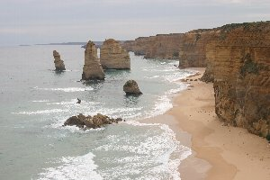
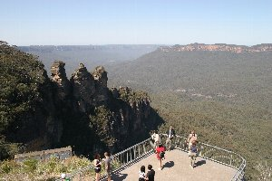
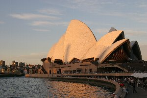
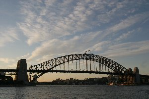
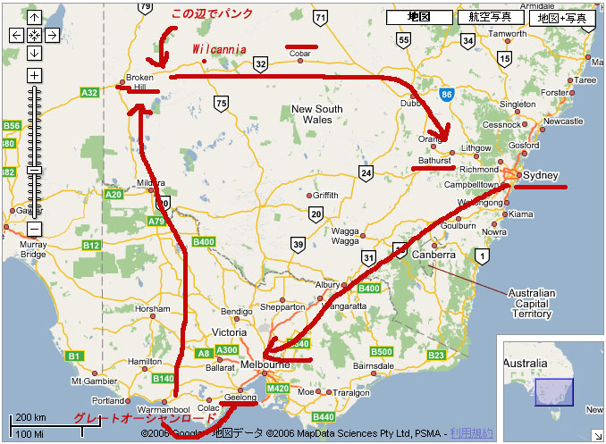

オーストラリア爆走紀行 | 2006年9月 |
|---|---|
| 長年の間、行ってみたいと思っていたオーストラリアに、ようやく行くことが出来ました。 友人が就職活動するために現地に居るため、それを頼りに遊びにいったわけですが、まあ、オーストラリアは広いね。 とっても。 そのオーストラリアをちょっぴりレンタカーで走ってきたので、その旅紀行でも掲載しようかと思います。 細かく書いていくと、とても収まりきれないので、今回は簡潔に。 今回は現地まで一人で行くので、英語が苦手な私は乗換えでトラブラが無い様に、直行便で行く事にしました。 安い時期のせいか、殆どアジア経由と変わらない金額も決定打です。 直行便はカンタス航空でした。 カンタスも一度は乗ってみたいと思っていたのでラッキーです。 エコノミーでも一人に一台ＴＶが付いていました。 日本未公開の映画もＧｅｔです。（もちろん日本語吹き替え） | |
|  グレートオーシャンロード |  Broken Hillの町並み |
| ☆一日目 7:00amシドニー着 空港で携帯電話をレンタルし、友人Maxの出迎えを待っていたけど、8:00になっても来ない。 おかしいな〜到着時間は伝えてあったけど・・・ 8:30やっと合流。 なんでも今日はシドニーマラソンらしく、道が激混みだったという事。 それなら、シドニー観光を最終に廻して、今すぐメルボルン（Melboume)へ行こう。と言うことで、レンタカーで一路南へ飛び出した。 途中でMaxの昔住んでいた町等を観光(？）し、国道31号を時速110キロで走る。 違法では無いですよ。 ニューサウスウェールズ（NSW)州は、郊外道路の制限速度は、ほぼ110キロです。 レンタカーはヒュンダイの小型車「Gets」だったので、燃費を考え高速では走らなかったと言うのも有りますが。 この日はメルボルンに向けてひた走り、途中の牧場で夕焼けを撮影したりして、郊外のサービスエリアにて車中泊。 ここで見た夜空がすばらしく奇麗で、星の数が半端じゃなく見えました。 なんだか、簡潔に書く予定が長くなっている様なので、更に簡潔に。 ☆二日目 ジーローン（Geelong) 街中のピザ屋で食べたピザとアイスコーヒーが美味しかった。 料金も安いしね。 海岸で今旅行初コーヒー集会を実施。 夜はBarでちょこっとお酒。 宿泊はMotelです。 スーパーで買った絵葉書を、普段会えない友人宛てに書き、就寝。 | |
 Broken Hill郊外 |

Broken Hill からWilcannia 途中でパンク！ 写真クリックしてみて。 |
| ☆三日目 グレートオーシャンロード観光。 最近CMでも見かけるようになった観光地。日本人は皆無。 写真撮影しまくりでした。 夕食はアララート（Ararat）でフィッシュ＆チップスを頂く。 ニュージーランドで食べたフィッシュ＆チップスが不味かったので期待はしていなかったけど、ここは結構美味しかった。 魚の種類も選べるしね。 夜、ブロークンヒル（Broken Hill)へ向かう途中、郊外の道端で天体写真を試みる。 見渡す限り外灯など無く、星がメチャ見えて感動〜 天の川が頭の上に流れているのが良く分かる。 天の川も、銀河の中心方面が見えているのだろう。 この日もオアシス（休憩所みたいなところ。何も施設無く、駐車スペースだけ有る）で車中泊。 ☆四日目 ブロークンヒル観光。 荒れ果てた荒野に、ポツンと町がある。 しかし、寂れた感じは無くて、小さいが普通の町並みが有るのでビックリ。 この日はMotel泊。 | |
 郊外で見た天の川 |  Blue Mountain |
| ☆五日目 ブロークンヒルから東へ荒野を走り、タボを目指す。 今回のMaxテーマで言えば、ここがメインになるのだろう。 本当に荒野。 草がチョロット生えているだけの荒れた土地で、何も無い。 舗装道路が一本通っているのが不思議な感じです。 雨も余り降らないのだろう、赤い大地に照りつける太陽が痛いくらいです。 9月だけど季節は夏みたい。 ここでハプニング発生！ 走行中ガクッガクッて車がパンク！ まだ新車に近い車なのに〜〜〜 急いで路肩にてスペヤタイヤに交換する。 スパヤタイヤが有ったから良いものの、前も後ろも一直線の道のほかに何も見えない所で、立ち往生したら一大事でした。 しかし、親切な人が止まってくれて、「大丈夫？」って声を掛けてくれました♪（もちろん英語） 一日中走り通しだったけど、結構楽しめます。 その広さと日本で見れない風景、立ち寄った小さな町、追い抜かしていく巨大なトラック。 ほぼ一直線の道路だけど、風景は違うし、これほど人に会わない旅ってのも良いよね。 日本人は皆無だし。 夜は、コバ（Cobar)から５０㎞離れたオアシスにて、再度星見会＆コーヒー集会。 やはり天の川が凄い！ これ望遠鏡持って来たら、ものすごいだろうな〜 ☆六日目 バサースト（Bathurst)サーキットをレンタカーにて走行。 ちょっぴりレーサー気分に浸る。 ここはレースを行っていない時は、一般道として開放されている。 と、言ってもモナコの様に完全一般道って分けじゃなくて、あくまでもサーキットを一般開放している感じがする。 結構楽しいです。 その後、ジェネラルンケイブ（Jenelan Caves)鍾乳洞を観光。でか過ぎです。 Motelに荷物を置き、MaxがMotelのプールで泳いでから、夕焼けに染まるブルーマウンテン（Blue Mountain）観光。 （この時期に泳ぐ人は居ない、と宿の人は言ったという。） 夕食はスーパーにてカップ麺や果物、ワインを購入。 日本と違うカップ麺だけど、以外に美味しい。 各地のスーパーに寄っているが、異国のスーパーは楽しいね。 違う発見が出来て、これ自体がイベントです。 言葉も分からないからドキドキです。 | |
|  夕日に染まるオペラハウス |  オペラハウス目の前の |
| ☆七日目 もう一度ブルーマウンテンを観光してから、シドニーに向かう。 途中で修理工場にてタイヤ修理に出すが、既にタイヤは裂けて使い物にならないそうで、新規タイヤ購入しました。 このまま返すと、最悪、高い保障料を払わなければならないかも知れないから。 約一万円〜〜！ その後はシドニーに戻り、観光三昧。 中華街の路上駐車場に車を置き、電車にてオペラハウスへ。 Maxは「つまらないよ」って言うけど、やっぱ一度は見ておきたいしね。 オペラハウスは、確かに一度見れば充分だけど、周りでは様々なイベントが行われていて楽しいです。 民族楽器を奏でる路上ライブで、思わずＣＤを購入。 駐車時間を気にしながら急いで駐車場所へ戻ると、ワイパーに何か封筒らしきものが挟まっている。 Ｍax「やられた！〜(>_<)」 駐車時間を7分オーバーで罰金約12000円也。 これは痛い。シドニーはこういう細かいところが厳しいらしいので、皆さんも注意してね。 気を取り直して、夕食にタイ料理屋に行く。 これが美味い♪ トムヤンクンが絶妙な辛さ。 ●もメチャ美味い。 シドニー近郊のアジア料理店は美味しい店が多いそうで、ファーストフード（日本に比べれば美味いけど）に飽きてきた舌が、大満足でした。 | |
 路上ライブ（Koomurri) |  美味しタイ料理 |
| ☆八日目 最終日 夜には日本に帰らなければならないとは、ちょっと寂しい。 最後に買い物（お土産）をしておこうと、大きいショッピングモールに行く。 本屋やスーパー、雑貨屋、服屋等がひしめき合っていて、色々見れるし飽きないで良い。 スーパーで買い物をして金を払うときに、 レジの浅黒いおじさんが「☆；τバッ・・※」と捲し立てるが何を言っているか分からない。 指をさす方向を見ると、レジ袋の変わりになる布製バックが見える。 これを買わないか？と聞いているのかと思い「Ｎo]と言うと、「Ｎo〜〜〜〜？！」 いやいや、おじさん、何を言ってるか分からないよ。 ちょうどそこにＭaxから電話が来たので、代わってもらい話をしてもらうと、どうやらバーコード読み取りが不調で、しばらく待てということらしい。 指をさしたのはレジだったのだろう。 こうして、要らない恥をかきながら、私のオーストラリア旅行は終わったのでした。 あ、最後の昼飯でインドネシア料理屋行きました。 ここのナシゴレンがメチャ美味でした。 | |
|  今回のルート図を載せておきます。 地図情報はGoogleさんより拝借しております。 Googleさんすいません。 写真＆コメント ｂｙ べっしー | |